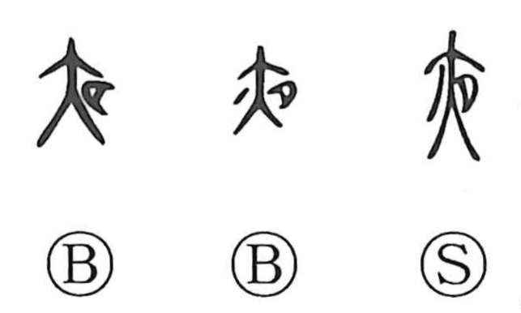

夜

Kun: yoru, yo | On: ya
night ・ evening
Explanation
夜 combines 大, a person seen from the front with arms and legs spread, with 夕, the evening moon. The moon appears beneath the person's arm. Its emergence gives an image for the time when the moon comes into view: evening and night.
From that time of day come night, nighttime darkness, and the hours extending toward dawn. 夜 can refer to the night as a whole or specify a part of it, such as midnight.